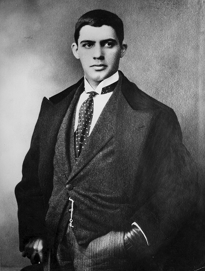

Peinte en 1911, « Le Saut du Lapin » d’Amadeo de Souza-Cardoso est une œuvre fascinante qui traduit à la fois l’énergie du mouvement et la liberté du geste pictural. Cette peinture illustre l’audace d’un artiste en pleine recherche d’identité, à la croisée du cubisme, du futurisme et d’une sensibilité très personnelle à la nature.
Le tableau capture un instant suspendu : un lapin bondissant, figé dans une explosion de formes et de couleurs.
Tableau
Dans « Le Saut du Lapin », Souza-Cardoso ne cherche pas à représenter le réel, mais à traduire le rythme du vivant. Les lignes se fragmentent, les contours s’effacent, et la couleur devient un langage autonome.
Peindre, c'est inventer la respiration du monde.

Epoque de création
Cette œuvre date du début des années 1910, période où Amadeo vit à Paris et s’imprègne de l’effervescence des avant-gardes.
Aux côtés de Picasso, Modigliani ou Brancusi, il découvre de nouvelles manières de penser la forme et le mouvement.
« Le Saut du Lapin » incarne parfaitement cette époque où l’art quitte la simple imitation pour explorer la vibration intérieure du monde moderne.
Histoire
Le lapin, chez Souza-Cardoso, devient un symbole de vitalité et de transformation.
Sa rapidité, son bond imprévisible, évoquent la création elle-même, qui surgit d’un élan spontané.
Selon certains biographes, Amadeo aurait trouvé son inspiration lors d’un séjour à Manhufe, en observant un lapin bondissant dans un champ — un mouvement si pur qu’il décida de le « peindre sans le peindre », en capturant seulement l’énergie du saut.
Style Artistique
Les couleurs vives et contrastées dominent la toile : desocres et rouges pour la terre et l’énergie, des bleus profonds pour la légèreté et la distance.
Souza-Cardoso y mêle cubisme et abstraction lyrique, jouant sur les formes géométriques et les aplats chromatiques.
Le lapin semble se dissoudre dans un tourbillon de formes, suggérant la fusion entre la nature et la modernité.
Les contrastes visuels sont essentiels : le blanc du lapin, presque éclatant, se détache sur un fond rythmé de verts et de bruns.
Cette tension chromatique crée une impression de vibration et de mouvement continu.
Les couleurs ne décrivent pas le réel : elles expriment une émotion, un élan vital qui traverse la toile comme une onde.